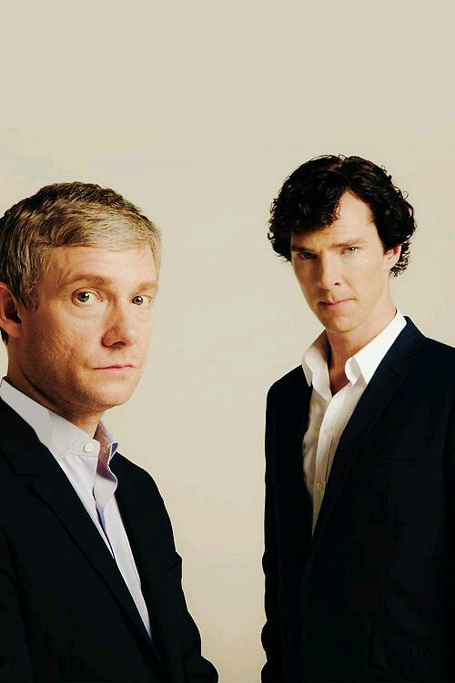

به نام خدا كه رحمتش بى اندازه است و مهربانیش همیشگى  حافظه اضافه شد. حافظه 2: اولین آموزش به صورت مولتی مدیا تابستان 94 و دیگر هیچ جز شرمندگی بد قولی. واقعا درگیر مطالب روانشناسیم امتحانا هم که در پیش. ________________________________________ پخش فصل سوم شرلوک از شبکه ب ب فارسی پنجشنبه ها ساعت 21
 ببخشید که سر موقع نتونستم قسمت دوم رو بزارم. قسمت هایی از داستان: تاکسی گرفتم مثل شرلوک سمت راست نشستم و بیرونو نگاه... بعد از اینکه تاکسی رفت خندیدم و برای خودم تاسف خوردم... ولی بقیه مردم هم اینو میبینن ولی خوش حال نمیشن چون یه چیز معمولیه و... ادامه
 آپدیت: کلیپی از اجرای بندیکت رو در ادامه ی مطلب ببینید
بخش دوم نعشکش خالی پنج شنبه ی این هفته از ب.ب.سی فارسی پخش می شه. پخش ساعت 9.10 شب و تکرار شنبه ساعت 11.00 و 00.10 و چهارشنبه ساعت 16:00 به وقت تهران
سلام. امروز میخوام چندتا عکس از شباهت بازیگران "بازی تقلید" و شخصیت های اصلی بذارم.
ادامه مطلب
MEMORY OF HUMAN حافظه لطفا فونت b-lotous را نصب کنید! اگر آموزش هم دیر شد ببخشید می خواهم مطالبم علمی تر بوده و copy & paste نباشند اگر دقت کنید مطالبی که تحت عنوان ذهن برتر و مخا در این وبلاگ ارائه می شود منحصر به فردند مطالبی که برای فرا گرفتن آنها باید هزینه کنین .امیدوارم با این کار اذهان سالم، قوی داشته باشیم و بهانه ای باشه برای دعای دوستان روز مادر هم مبارک. حافظه چیست؟ حافظه کوتاه مدت و بلند مدت چیست؟ آیا حافظه می تواند تقویت شود؟ چه راهکاری برای تقویت حافظه وجود دارد؟ چه مدل هایی برای حافظه ارائه شده؟ چه کسانی حافظه را مطالعه می کنند و چگونه؟ کدام قسمت از مغز درگیر فعالیت بسیار پیچیده حافظه است؟ چرا فراموشی اتفاق می افتد؟ چه کنیم تا فراموش نکنیم ؟ آلزایمر چیست؟ در ادامه مطلب به تمام پرسش های بالا پاسخ خواهیم گفت. نظراتی که به اندازه ، نظم ، فونت و کیفیت مطلب خواهید داد باعث قوت قلب ما خواهد شد با تشکر بزرگپور کارشناس روانشناسی بالینی
فیلم "بازی تقلید" زندگی آلن تورینگ را به تصویر می کشد اما چیزی که ما میبینیم تخیلی تر از تاریخ است.
آلن تورینگ یکی از چهره های کلیدی در قرن 20 بوده،هرچند داستان او تا همین اواخر چندان شناخته شده نبود. "بازی تقلید" تلاش کرد با به تصویر کشیدن آلن تورینگ به عنوان یک قهرمان جنگی و یک شهید همجنسگرا فرضیه های غلط درمورد او را اصلاح کند . کسی که جنگ جهانی دوم را به تنهایی دوسال زودتر تمام کرد. کسی که از بی عدالتی دولت خودش به خاطر تمایلات جنسی اش رنج می برد. اما داستان هرچقدر هم خوب اجرا شد چندان شباهتی به زندگی آلن تورینگ نداشت.متن زیر داستان را لو می دهد پس اگر فیلم را هنوز ندیده اید این را نخوانید. او خائن نبود بزرگترین برداشت آزاد در "بازی تقلید" متهم کردن تورینگ به خیانت به بریتانیاست، زمانیکه او کین کراس را بعد از اینکه وی را تهدید به افشای همجنس گراییش کرد لو نداد. در حقیقت زمانی که کین کراس یکی از اعضای "حلقه ی جاسوسان بریتانیایی" بوده، او و تورینگ روی پروژه های متفاوت کار می کردند و هیچ وقت همدیگر را ملاقات نکردند. همچنین هیچ مدرکی وجود ندارد که نشان دهد تورینگ استورات منزیز را می شناخت، یا انکه منزیز عمدا اطلاعات را توسط کین کراس به بیرون درز میداد. او هرگز به جاسوسی متهم نشد در سراسر فیلم"بازی تقلید" تورینگ به جاسوسی بریتانیا برای شوروی متهم میشد.این اتفاق نه تنها زمانی که او در پارک بلچلی بوده رخ داد، بلکه در آخر فیلم دلیلی برای پلیس بود تا او را تعقیب کند.در حقیقت،با وجود جاسوسانی که در پارک بلچلی فعالیت میکردند ،تورینگ هرگز زیر سوال نرفت. بلکه درمورد همجنسگرایی او به پلیس هنگامی که داشتند از دزد بازجویی میکردند گفته شد. این دلیلی است که باعث شد پلیس به دنبال او برود. وقتی تورینگ با آنها مواجه شد، هیچ تلاشی نکرد تا همجنسگرایی اش را پنهان کند،درحالیکه در فیلم درست عکس این رخ داد. او به تنهایی ماشین را درست نکرد- و اسمش کریستوفر نبود. در فیلم نشان داده شده است که تورینگ به شدت از مرگ عشق دوران جوانیش کریستوفر مورکوم تحت تاثیر قرار گرفته است.این اتفاق محتمل است،اما نه آنقدر شدید –همانطور که فیلم میخواهد ما باور کنیم- که ماشینی به نام کریستوفر را برای از بین بردن جای خالی او در زندگیش بسازد. در اصل نام ماشینی که کد انیگما رو شکست «پیروزی» بود(که از روی ماشینی ابتدایی که قبلا کارشناس های لهستانی درست کرده بودند الهام گرفته شده بود) و تورینگ آن را با همکار ریاضیدانش به نام گوردون ولچمن ساخت... نه به تنهایی.ولچمن در فیلم به تصویر کشیده نشد. ادامه در ادامه ی مطلب.
|
 since 2011 (عضو باشگاه نویسندگان میهن بلاگ) Bakerstreet.ir مدیر وب سایت : Sherlock 221 |


 |
تمام حقوق این وب سایت و مطالب آن متعلق به شرلوک هلمز ساکن ۲۲۱ بی خیابان بیکر می باشد
.
كد نویسی و گرافیك قالب توسط : تم دیزاینر |